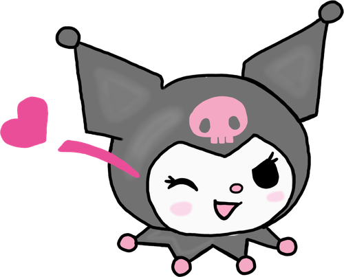
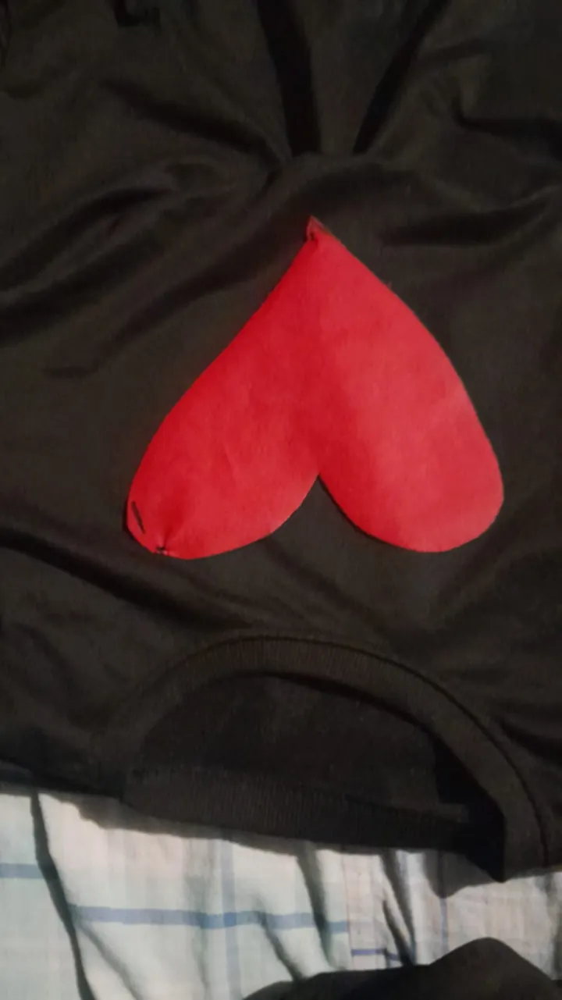
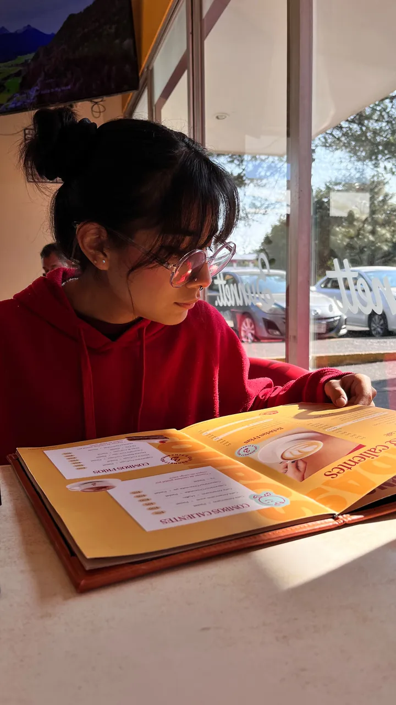
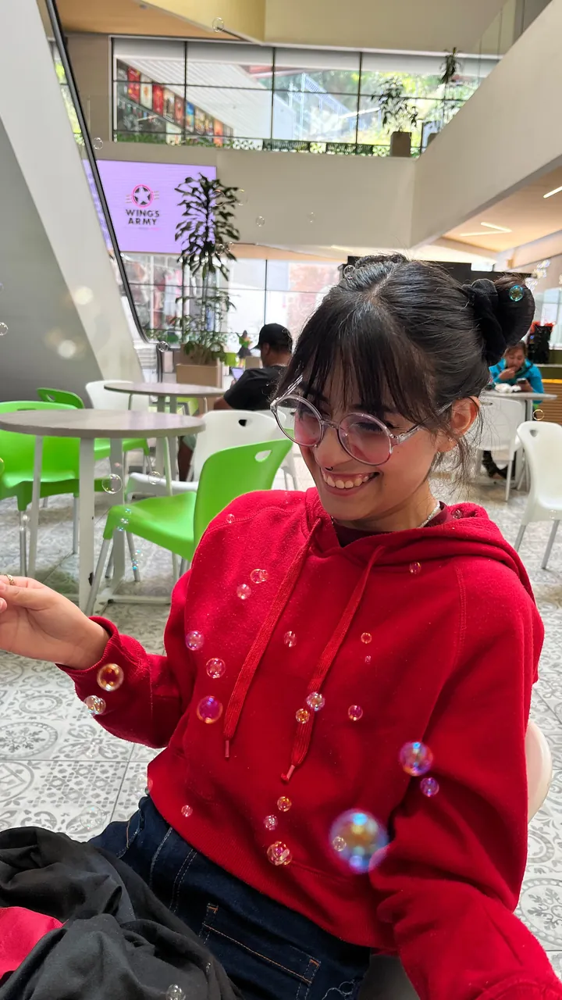

30 octubre 2026Medio Pucca y medio Garu
📍 Tlaxcala
- Comimos
- Ella un pan francés con berrys, yo huevos al gusto y unas chalupas
- Lugares
- La cafetería y Vértice
- Ella llevaba
- Sus dos chonguitos, su suéter rojo y un pantalón de mezclilla
"No sé qué hacer, pero quiero hacerlo contigo" — Daniel
 Lo que pasó
Lo que pasó
El día realmente empezó antes, no el 30, sino el 29, en la tarde/noche, hablamos sobre disfrazarnos, el disfraz fue de Pucca y Garu, cuando llegué a SM, fui por tela para el corazón, guantes rojos y listón, llegué a mi casa y cosí un poco el suéter negro con el corazón para que se viera, revisé hasta sobre cómo hacer las coletas de Garu, fuimos a dormir en llamadita <3, despertamos, llegó a su clase de inglés, una vez que acabó su clase, nos vimos, se veía muy bonita, no sé si se puso rubor, pero sus mejillas se veían muy rojitas, se veía hermosa, sus dos chonguitos, su suéter rojo, y un pantalón de mezclilla, yo no llevaba aún el suéter porque hacía mucho frío y ella tampoco la faldita de Pucca por la misma razón, no puedo dejar de decir lo hermosa que se veía, estaba muy hermosa, la amo tanto.
Fuimos a comer, con un poco de miedo de que su madre nos viera, pero llegamos a un restaurante en la plaza china, comimos, ella pidió un pan francés con berrys, yo pedí huevos al gusto y unas chalupas, comimos, le tomé fotitos, hablamos bien de muchas cositas, fue muy lindo, nunca había desayunado en una cafetería con una pareja, normalmente si desayuno en una cafetería es solo o con temas de trabajo, fue lindo, una vez que terminamos, fuimos a Vértice y entre lo que hablábamos en lo que empezaba su clase a las 11, empezamos a hablar sobre un plan en el centro, quedamos en que iba solo a ir por su mochila y después íbamos a comprar unas cosas, cuando entró, yo la esperé afuera, hasta que me dijo que estaba su coordinador entonces no se podía salir, aproveché entonces para ir a comprar las cositas, compré la espada de Garu, y como dato curioso, no cabía en la mochila, entonces iba con un mango saliendo de mi mochila, cuando llegué, ella me dijo que la esperara afuera, vi cómo le aventaron su mochila por la ventana para que se pudiera salir, pasó, fuimos al centro, estuvimos un rato y peleamos por unos temas, la abracé, no sabía cómo solucionarlo, pero entre abrazos, besos, y amorcito nos arreglamos, le dije que la amaba, me dijo lo mismo, y nos regresamos para su casa, se bajó en su parada y yo me fui a mi casa igual.
No nos pudimos disfrazar, pero fue cuestión de la circunstancia, entre el frío y el tema de cambiarnos de ropa, aún tengo fe que un día solo para las fotitos nos disfrazaremos y terminaremos ese plan, pero aun así, fue un día lindo.
Te amo Aislinni, como diría el nsqk "Algo hice bien esta vida, y espero en la siguiente estés también", te amo en esta y todas mis demás vidas, si existe un hilo rojo sé que eres mi otro extremo y no importa la leyenda o el folclore, si habla de amor eres tú mi camino siempre, te amo <3.
 Fotos extra
Fotos extra


